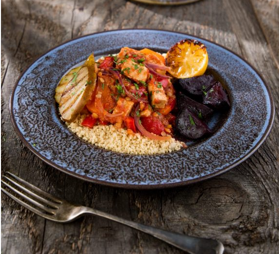
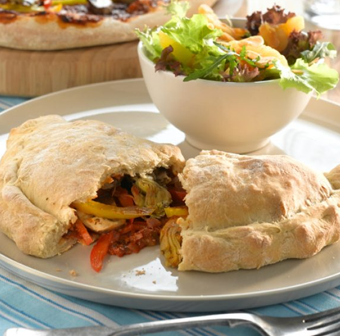
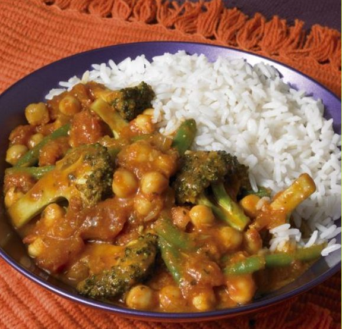
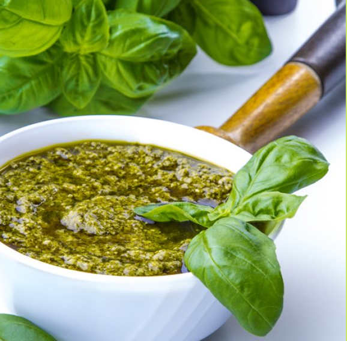
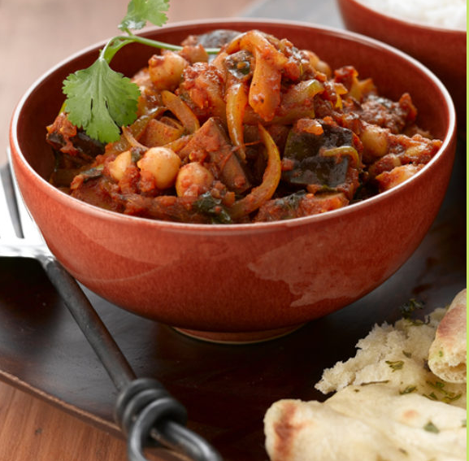

Here you can find some quick and easy recipes:





American-Style Pancake
Method
- To make the pancakes: In a jug, add the rice milk, margarine and egg yolks. In a large mixing bowl,
add the flour, sugar and bicarbonate of soda. In a second large bowl, add the egg whites.
- Whisk together the ingredients in the jug, then mix it into the flour mixture. Whisk the egg whites until fluffy,
then gently fold them into the pancake batter with a spatula.
- Heat a medium non-stick frying pan over a low heat. Divide the pineapple pieces into 12 batches and sprinkle each with caster sugar.
Put one batch into the pan, sugar side down. Let them caramelize for 30 seconds.
- Use a ladle to pour 1/12 of the pancake batter over the pineapple to create an even, round layer. Cook for 3-4 minutes, until the batter has
stopped bubbling. Flip over the pancake with a spatula and cook the other side for another 2-3 minutes. Repeat the process with the rest of the batter to make 12 pancakes.
- Bring the pan to the boil. Add the margarine and whisk it in for 10 minutes over a medium-high heat, until the sauce turns a light caramel colour.
Turn down the heat and sieve the cornflour into the sauce.
Ingredients
- 175ml rice milk
- 60g vegan margarine, melted
- 2 large free-range eggs, whites and yolks separate
- 1 tsp bicarbonate of soda
- 1 tbsp caster sugar, to carmalise the pineapple
Remember that now you can buy the products here
Baked Beetroot
Method
- Heat the oven to 200°C/gas mark 6. Peel the beetroot and cut into 3cm chunks and place on a large baking tray.
Drizzle the oil over the beetroot and roast for 35-40 minutes until the beetroot is tender, turning halfway through.
- For the tagine: Prepare the tagine heat the oil in a saucepan and fry the onion for 5 minutes until it starts to soften.
Add the carrot and pepper and cook for a further 3 minutes
- Add the garlic, paprika, ras-el-hanout and cook for a minute. Stir in the chopped tomatoes, lentils and stock, bring to the boil. Cover and simmer gently for 15 minutes.
- Slice the pears into thin slices and brush lightly on both with oil. Heat a griddle pan, then chargrill the pears, in batches, for 1-2 minutes on each
side. Add the lemon halves to the pan and cook for 2 minutes until charred.
Ingredients
- 2 tsp rapeseed oil
- 1 red pepper, deseeded and roughly chopped
- 2 tsp smoked paprika
- 280g Quorn vegan pieces
- Black pepper, to taste
Remember that now you can buy the products here
Cannellini Bean
Method
- Fry the onions in oil until soft then add the garlic and smoked sweet paprika. Continue to fry for another 30 seconds.
- Put the fried onion mixture in a food processor along with the beans, breadcrumbs, cheese and season with salt and pepper. Process into a pate consistency
- Roll the mixture into 8 sausages. You can freeze the sausages to cook another time at this step if you like
- Dip each one in the beaten egg and then roll in the extra breadcrumbs. Shallow fry the
sausages two at a time turning only when the bottoms have brown first to avoid them falling apart, if doing vegan version coat in the nuts and
grill under a moderate flame, turning occasionall
Ingredients
- 2 tbsp olive oil
- 50g wholemeal breadcrumbs
- 1 tsp smoked sweet paprika
- Freshly ground salt & pepper to taste
- 100g vegetarian smoked Applewood cheese *use smoked tofu for vegan + 50g finely chopped hazelnuts
Remember that now you can buy the products here
Slow Roasted Pepper Calzone
Method
- For the dough: Sift the flour into a large bowl. Add the salt sugar and yeast and stir.
Make a well in the flour and add the oil, then gradually add the water whist stirring.
Dust your work top with a little flour. Place the dough on the worktop and kneed for 8 minutes.
Divide the dough into two halves and place into a clean bowl, cover and put in a warm place for 20 minutes. At this point move onto the sauce and topping
- For the sauce: Gently fry the onions for five minutes, then add all of the other ingredients.
Put onto a low light and allow to simmer until ready to use, stirring occasionally. When cooked it should be rich and sticky.
- Place half the sauce on one half of each piece of rolled out dough and add half the filling and pine nuts.
Using a pastry brush wet the edge of dough. Fold over the dough pulling and pinching the dough together to seal the join.
It will look like a large Cornish pasty! Carefully place the calzone on a floured baking try and bake for 10 minutes until golden brown.
- Back to the dough.... After 20 minutes of rising turn the dough out onto a floured surface. Gently roll the dough out to the size of a large dinner plate.
Ingredients
- 1 tsp salt
- 360g plain white flour
- 1 tsp sugar
- 2 tbsp olive oil
- 1 red onion, finely sliced
Remember that now you can buy the products here
Broccoli Korma with Basmati Rice
Method
- Heat the oil in a large saucepan and fry the onion until soft. Stir in the curry paste and cook for a further 2 minutes
- Stir in the double cream, chopped tomatoes and broccoli and bring to the boil. Cover the pan and turn
down the heat to simmer for 20 minutes, until the broccoli is cooked but not so
- Add the green beans, chickpeas and tomato puree, bring back to the boil and simmer for a further 5 minutes.
- Serve with basmati rice and a warm naan bread each, cooked according to packet instructions.
Ingredients
- 1 tbsp vegetable oil
- 3 tbsp korma curry paste
- 3 tbsp double cream
- 2 handfuls broccoli florets
- 1 large handful frozen long green beans
- 1⁄2 packet basmati rice
Remember that now you can buy the products here
Classic Basil Pesto
Method
- Place basil leaves, garlic, salt, pepper, olive oil and pine nuts in a food processor or blender. Blend to smooth purée, transfer to a bowl and add the cheese
- Add the garlic and Parmesan or Romano cheese and pulse several times more. Scrape down the sides of the food processor with a rubber spatula
- While the food processor is running, slowly add the olive oil in a steady small stream. Adding the
olive oil slowly while the processor is running will help it emulsify and help keep the olive oil from
separating. Occasionally, stop to scrape down the sides of the food processor.
- Toss with pasta for a quick sauce, dollop over baked potatoes, or spread onto crackers or toasted
slices of breadPlace the basil leaves and pine nuts into the bowl of a food processor and pulse several times.
Ingredients
- 50g fresh basil
- 3 cloves garlic, chopped
- 125ml extra virgin olive oil
- 45g pine nuts, lightly toasted
- 90g vegetarian Italian-style hard cheese, grated
Remember that now you can buy the products here
Chickpea Balti
Method
- Add the chopped potato, aubergine, ground coriander, cumin and turmeric. Stir to coat vegetables
evenly and then cook over a high heat for 3 minutes stirring occasionally. Remove from pan and set aside.
- To make the sauce: Heat the oil in the pan. Add the onion, crushed garlic, grated ginger, cassia bark and whole cloves and cook for 1 minute.
- Add chopped plum tomotoes, turmeric, coriander, cumin, garam masala, salt, sugar and chilli to taste.
Cook on a high heat for two minutes, then lower to a medium heat and cook for a further 3 minutes stirring occasionally.
- Remove the cassia bark and blend the sauce roughly with a hand blender, then add the vegetables and
chick peas to the sauce with 3 tablespoons of chopped coriander, the water and the garam masala.
Ingredients
- 2 tbsp vegetable oil
- 2 tsp root ginger, peeled and grated
- ½ tsp ground coriander
- 1 sugar
- 4 tbsp fresh coriander, finely chopped
Remember that now you can buy the products here
Tofu Kebabs
Method
- Mix the Simply Delicious Organic Mayonnaise with the mustard, curry paste, garlic and ginger and season well.
Pour over the tofu and stir gently to coat. Cover and leave to marinate for 30 minutes.
- Brush the kebabs with a little vegetable oil and grill until cooked and the marinade starts to bubble and go golden brown.
- Place the reserved marinade in a small sauce pan with 1 tbsp smooth mango chutney. Heat through gently.
- Serve the kebabs on a bed of rice with the warm marinade drizzled over.Cut the tofu into bite sized cubes and place in a shallow dish.
Ingredients
- 250g regular tofu, drained and pressed
- 150ml Simply Delicious Organic Mayonnaise
- 1 tbsp Dijon mustard
- 1 tbsp medium curry paste
- 16 cherry tomatoes
- 8 bamboo skewers
Remember that now you can buy the products here